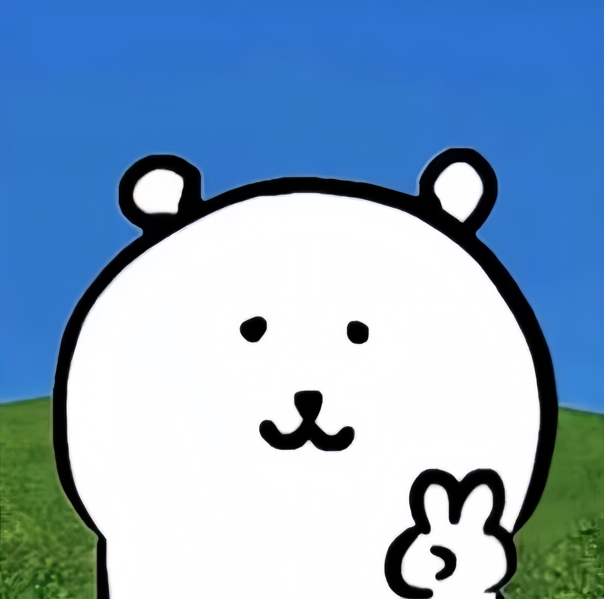

插画家nagano以「nagano熊」、「Chiikawa」等疗愈插画中独特的世界观在社群媒体上广受欢迎。
在一次采访中，作者nagano这样说：
あまり深い意味はないのですが、カマキリのメスがオスを食べてしまう、みたいな生き物ならではの容赦のなさが好きなところがあるので、そういった生き物らしさを描きたい気持ちがあるのかも知れません。
没有什么深层的含义，但一部分的我喜欢生物本能的残酷，就像雌性螳螂吃掉雄性那样，所以也许我想得我想描绘这种生物的本性。
何かメッセージを伝えたかったり、重いテーマを描いているというよりは、何かが起こった時の反応や表情を描きたいという気持ちの方が強いです！
与其说我想传达什么信息或描绘一个沉重的主题，不如说我想要描绘这种事情发生时的反应和表情。
当被问及是谁影响了她从而让她成为一名插图画家和漫画家时，nagano说是吉田战车，其被称为荒诞派搞笑漫画的先驱。
在nagano的作品中，没有解释"又小又可爱的家伙"是什么，也没有描述过小奇美拉和它变成小奇美拉的原因。
在nagano的作品中，有一种超现实主义的世界观、荒诞感和世界的深度。读者"似乎能从中读出些什么"。她提到的另一个可能与自己作品有渊源的东西是"在轻松愉快的氛围内充满了刺激的童话和绘本"。
她从小就喜欢《狼和七只小山羊》和彼得兔故事全集中的《大胡子麦格雷戈的故事》，这两本书都讲述了小动物被抓，差点被吃掉，最后逃出生天的故事。